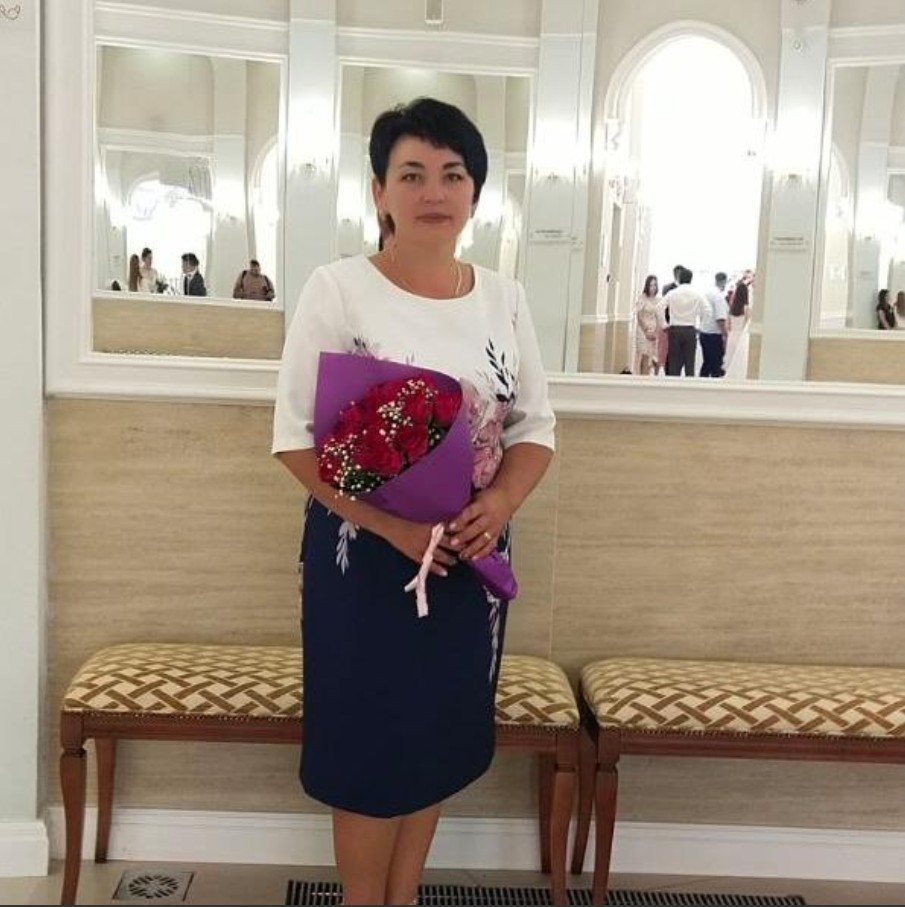

Обо мне
Я, Басырова Инга Валерьевна, работаю воспитателем уже более 15 лет. За это время я успела поработать с детьми разных возрастных групп и разработать собственные методики развития и воспитания.
Мое кредо: "Каждый ребенок уникален, и моя задача — помочь раскрыть его потенциал".

Мои педагогические принципы
Индивидуальный подход
Каждый ребенок развивается в своем темпе, и я учитываю это в своей работе.
Забота и внимание
Создание комфортной и доброжелательной атмосферы — основа успешного обучения.
Развитие мышления
Учу детей не просто запоминать, а думать, анализировать и делать выводы.
Работа с родителями
Считаю важным тесное сотрудничество с родителями для гармоничного развития ребенка.